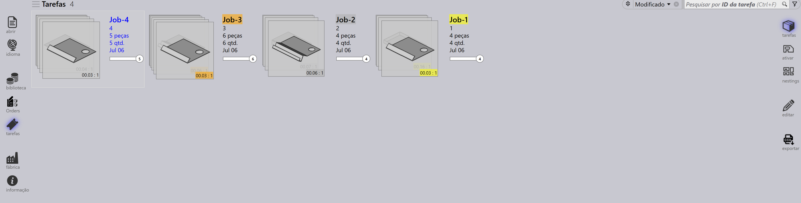
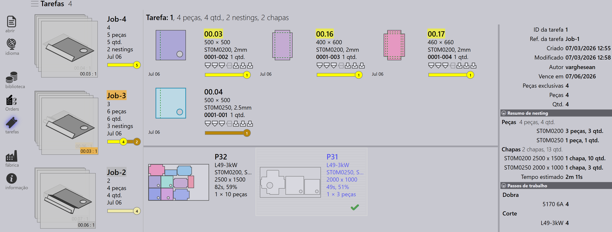
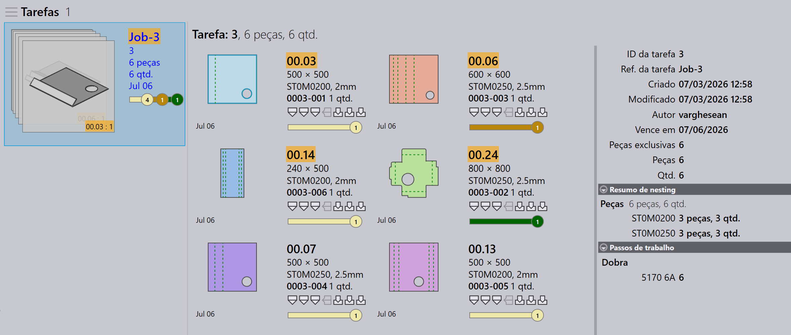
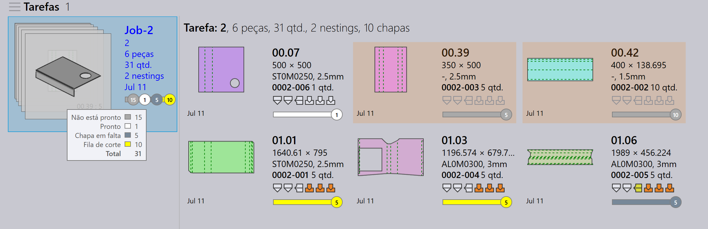
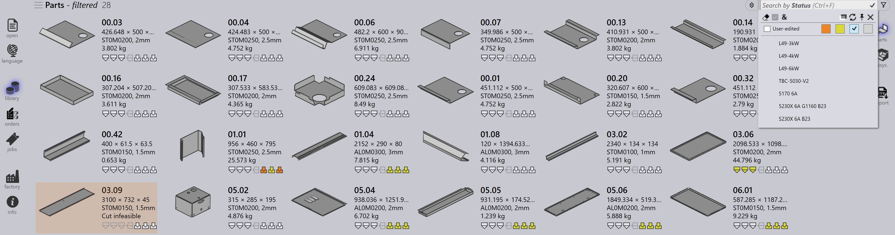
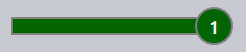
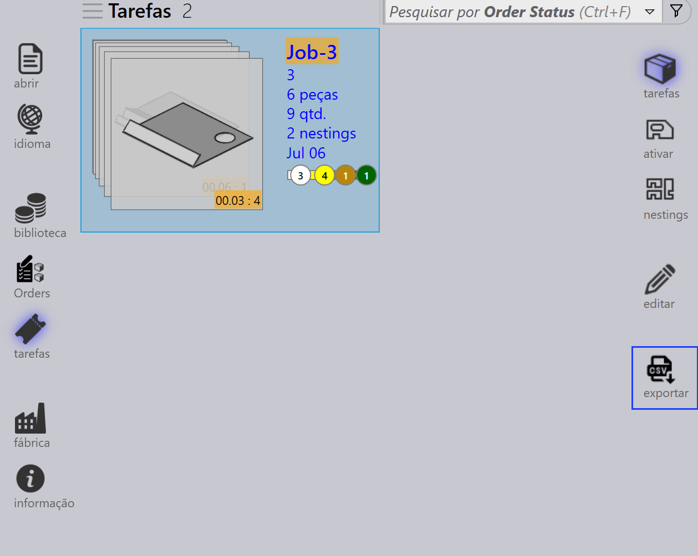
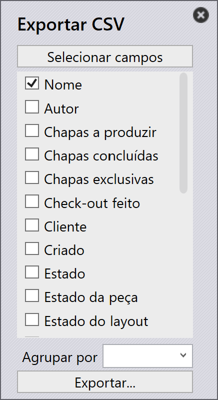

Visualização de tarefa
Esta seção explica as diferentes visualizações disponíveis na visualização de Tarefa, incluindo Jobs, Parts, Nests, Edit, Simulate e Export.
Jobs
Selecionar a opção tarefas exibe uma lista de todas as tarefas atualmente configurados no software. Você pode clicar duas vezes em uma tarefa para ver seus detalhes ou clicar com o botão direito para acessar opções adicionais.
-
Tarefas são exibidas em visualização de tiles, onde cada tarefa é exibida com propriedades básicas como Job ID, Job Ref, nome do Cliente, Total de peças, Data de Entrega, barra de status da Tarefa, etc.
-
Cada tile de tarefa também exibe imagens de peças em formato de cartões empilhados. Você pode percorrer todas as peças em uma tarefa usando a roda do mouse.

Detalhes da tarefa
-
Clicar duas vezes em um tile ou pressionar a tecla Enter após selecionar um tile alterna a visualização para o Modo de Detalhes.
-
A página de detalhes exibe a lista de peças juntamente com as chapas aninhadas (layouts), se houver.
-
Use as teclas de seta para cima/para baixo para alternar entre tarefas na página de detalhes.
-
Rolar a roda do mouse sobre a pilha de peças destaca a peça tanto na lista de peças quanto nos layouts.
-
Selecionar um layout destaca o layout e todas as peças aninhadas nele na lista de peças. Os destaques são desativados automaticamente após um minuto.

-
Resumo de nesting:
-
Peças: Exibe o número total de itens do pedido e a quantidade total na tarefa.
-
chapas: Exibe o número total de chapas aninhadas juntamente com a quantidade total de chapas.
-
-
Passos de trabalho:
-
Dobra: Mostra a máquina atribuída e a quantidade do pedido a ser processada.
-
Corte: Mostra a máquina atribuída e a quantidade do pedido a ser processada.
-
Prioridade
-
Primeiro, clique no ícone Jobs no lado esquerdo da tela, selecione a tarefa que deseja editar e clique em edit no lado direito da tela (certifique-se de que a opção Jobs esteja selecionada).
-
Alternativamente, clique com o botão direito na tarefa selecionada e clique no ícone Fazer check-out do documento para edição.
-
Quando você clica em edit, a janela de edição da tarefa é exibida. Nesta janela, você pode definir ou alterar a prioridade da tarefa.

-
Com base na prioridade da peça da tarefa, a Referência da tarefa no tile da tarefa é colorida de acordo.
-
As peças da Tarefa são classificadas primeiro por prioridade e depois por data de entrega. Elas também são coloridas de acordo com sua prioridade.
-
Durante o nesting, peças Urgent são consideradas primeiro, seguidas por High, depois Normal e finalmente peças de prioridade Low são colocadas no espaço restante nas chapas de nesting.
-
As chapas de nesting também são classificadas e coloridas de acordo com a prioridade.
| Prioridade da tarefa | Descrição da cor |
|---|---|
|
Urgente |
|
Normal |
|
Alta |
|
Baixa |



Status
-
A barra de status da Tarefa usa códigos de cores para indicar o progresso ou condição da tarefa com base na quantidade processada ou restante.
-
As peças dentro da tarefa e as chapas de nesting também são destacadas com cores correspondentes para refletir seu status individual dentro da TAREFA geral.
-
A codificação por cores melhora o rastreamento e garante que os operadores possam ver facilmente o status de produção rapidamente.


| Status da Tarefa | Descrição |
|---|---|
|
Não está pronto |
|
Nesting |
|
Pronto |
|
Bend Planned |
|
Chapa em falta |
|
Fila de dobra |
|
Fila de corte |
 |
Feito |


Peças
A visualização Active Parts exibe todas as peças que estão atualmente em progresso dentro das tarefas ativas.
Cada peça é representada como um tile mostrando detalhes principais como nome da peça, dimensões, material, espessura, quantidade e data de entrega. Uma pré-visualização visual da peça também é exibida.
Esta visualização ajuda os usuários a monitorar o status de processamento de peças individuais e rastrear seu progresso nas tarefas em andamento.

Nestings
A visualização Active Nests exibe todos os nestings que estão atualmente em progresso dentro das tarefas ativas.
Cada nesting é representado com detalhes relevantes como número de peças e status de processamento. Um layout visual das peças aninhadas também é exibido.
Esta visualização ajuda os usuários a monitorar o progresso do nesting e rastrear como as peças são organizadas e processadas nas chapas.

Editar
A opção Edit permite modificar o item selecionado.
Com base na visualização atual, a instância selecionada é aberta para edição:
-
Na visualização Jobs, a tarefa selecionada é aberta para edição.
-
Na visualização Active Parts, a peça selecionada é aberta para edição.
-
Na visualização Active Nests, o nesting selecionado é aberto para edição.

Exportar csv
A opção Export permite selecionar informações da tarefa e exportá-las para um arquivo CSV.
-
Clique no ícone jobs.
-
Clique na opção export no lado direito da tela.

-
Uma caixa de diálogo aparece mostrando os campos disponíveis:

-
Marque as caixas de seleção dos campos que deseja exportar.
-
Use a opção Group By se quiser agrupar os dados por um campo selecionado.
-
Clique em Export para gerar o arquivo CSV.
Informações adicionais
Existem também três ícones adicionais no lado direito da tela que são simular, Goto e voltar.
-
Simulate abrirá o item selecionado para uma visualização mais detalhada.
-
Goto alternará o foco e exibirá a peça ou o nesting que está selecionado.
-
Back voltará um nível de onde você está atualmente, por exemplo clicar em voltar enquanto está na simulação o levará de volta à tarefa principal e de uma tarefa o levará de volta à exibição principal de tarefas.